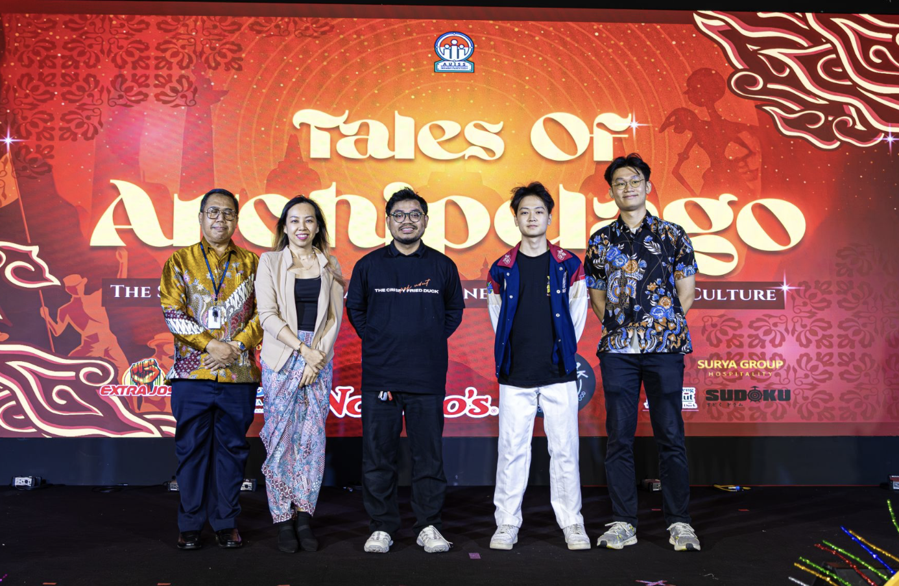

Strategic B2B Partnership & Credibility Building
Extra Joss
Securing high-impact collaborations through targeted cold outreach.
Scroll
01 // The Strategy
Cold Email to Mutual Exposure
Secured concurrently with the Nando's collaboration, this partnership was born entirely from a highly optimized cold email campaign.
The proposal was engineered to be mutually beneficial: providing Extra Joss with direct brand exposure to a highly engaged student demographic, while simultaneously elevating the credibility and scale of the Asia Pacific University Artificial Intelligence Club's major events.

Insert extrajoss-1.jpg here